Kendal Tourist information
Pannus mihi Pannis. (Wool is my Bread)Kendal, situated close to and on main road and rail routes and around two hours from Manchester Airport is the southern gateway to the lakes, fells, walks, climbs, sporting challenges and adventure activities of the Lake District & Cumbria which together form the magical 900 square miles of the Lake District National Park.Kendal is a traditional Cumbrian market town compact enough to be comfortably walked from end to end in less than 20 minutes. It has a wide range of all purpose shops and stores many of which are in pedestrian only areas together with a good choice of restaurants, cafés, take-aways, fast food outlets, and pubs serving freshly prepared bar meals and snacks. Visitors will find conveniently placed pavement mounted signs and plaques displaying information of, and directions to places of historical interest, green spaces, riverside walks, museums and galleries. In recent years several schemes designed to enhance Kendal's appeal to visitors and residents alike have been put in place whilst maintaining a pleasing balance of old and new. |
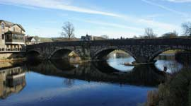 |
Kendal Town Hall Clock TowerKendal's major landmark has stood atop the Town Hall since 1861. Not only is it clearly seen but it's clearly heard. The clock strikes the hours, chimes the quarters, and four times daily at 9am: noon: 3pm: and 6pm: carillons ring out musical compositions with a different tune allocated to each day of the week.Sunday. "Devotion". ( by a Kendal composer) Monday. "Kelvin Grove". Tuesday. "British Grenadiers". Wednesday. "Poor Mary Anne". Thursday. "When the King enjoys his own again". Friday. "Gary Owen". (Irish composition) Saturday. "Na luck aboot the hoose". ( Scots) Kendal Town Hall. This Victorian building standing on Kendal's main street was adapted for use as a Town Hall in 1859. It contains a number of attractively refurbished rooms which are available for functions, dances, weddings, conferences, operatic and dramatic productions, meetings of any size, coffee mornings and midday concerts. At pavement level close to the main entrance is the Ca-Steean or Cauld Stone which once formed part of Kendal's original Market Cross. The stone marks the place from where important local and national news was proclaimed and is still occasionally used during the events season. |
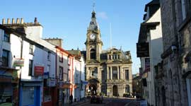 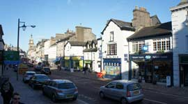 |
Kendal YardsKendal "Yards" were included in the town's development during the medieval period when building was extended beyond Kirkland to Highgate and Stricklandgate. Originally, there were more than 150 of these yards branching off each side of Kendal's main street with those on one side providing access to the River Kent. Several were named after prominent Kendal citizens and others were identified only by numbers. The yards were places of work for a variety of tradespeople and some contained cottages and animal stabling. Preservation of the remaining yards is just one of the many aims of the Kendal Civic Society who have placed information plaques at the entrances of several yards and on the walls of other buildings which are of historical interest. Today, some of the yards contain specialised shops, businesses, homes and eating places. |
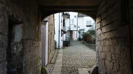 |
Kendal CastleIt's well worth the gentle climb up the grassy slopes of the hill on which the castle stands, not only for a close up of history but also for the glorious views over the town and surrounding countryside and to the fells beyond. Although now in ruins, large sections of the castle walls and a tower remain of this 13th C structure which has strong links with Katherine Parr, the 6th wife of Henry V111. The annual firework display on Guy Fawkes Night is staged here and is a spectacle not to be missed. |
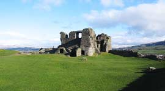 |
Castle Howe ObeliskThis is the site of Kendal's first castle on which now stands an obelisk erected in 1788 to celebrate the centenary of the revolution of 1688 when William of Orange arrived in England and James 2nd abdicated. The obelisk overlooks a grassed area which provides a picnic area and views over the town. Accessed by footpaths from Beast Banks. |
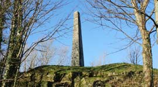 |
Castle DairyStanding in Wildman Street, the Dairy is a particularly fine example of medieval architecture. Built in the 16th C as a farm house, it is possibly the oldest inhabited building in Kendal. It isnow operated by Kendal College as a restaurant and art gallery. |
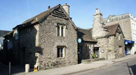 |
Abbot Hall Art Gallery & MuseumAbbot Hall, standing close to the River Kent in Kendal's historic Kirkland has been described as a "work of art in it's own right and a fitting place to display an important collection of art".Displays of works by renowned artists including local painter George Romney, and combined with the many exhibits of traditional Lakeland life and industry in the museum section, provides something of interest for all. Galleries, coffee house and shops are fully wheel chair accessible but the museum only partially so. Please note that groups are offered free coach parking, discounted admission and special catering. www.abbothall.org.uk |
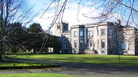 |
Kendal Parish ChurchA major landmark and building of considerable historical importance, Kendal Parish Church in the centre of Kirkland, was constructed in 1201 on the site of a previous church.It is one of the widest churches in England and only four feet narrower than York Minster. Inside, in the Parr Chapel, are fragments of a 9th C Anglian Cross and some Saxon stone. Many memorials and plaques on the walls are seen to be dedicated to Cumbrian and Westmorland families of importance and, not easily seen hanging above the Vestry door is a helmet and sword. The helmet is reputed to have belonged to Robert Philipson (Robin the Devil) which was knocked from his head when one Sunday he rode his horse into the church during a service in pursuit of his enemy, Colonel Briggs, who was laying siege to his (Roberts) home on Belle Isle, Lake Windermere. For a full history of this lovely old building go to www.kendalparishchurch.co.uk |
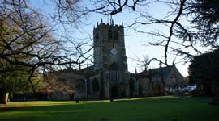 |
Quaker Tapestry Visitor Centre & Meeting PlaceThis is an exhibition of 77 panels of colourful embroidery housed in a fine example of Georgian architecture. Large screen films and audio guides, interactive "Quaker & Railways" display, a working model railway, children's activity bags, dressing up clothes and toys, a gift shop with something for all ages and an award winning café offering a wide choice of vegetarian cuisine, snacks, lunches prepared from locally sourced produce. Free Wi-Fi available. Step for access and car park. Discounted deals for groups of 15 or more.www.quaker-tapestry.co.uk |
|
Getting to Kendal |
|
By RailServices to Oxenholme the Lake District on the West Coast main line between London and Scotland.Kendal Railway Station stands on the single track branch line between Oxenholme on the West Coast main line and Windermere. Despite William Wordsworth's strong objections the station was opened in 1846 to much acclaim by Kendal's population. A public holiday was announced and residents celebrated with dancing in the streets. William Wordsworth later bought shares in the Railway Company. The station has a taxi rank and is a 10 minutes walk from the bus station and Kendal town centre. |
Bus ServicesServices connecting with Lake District and Cumbria destinations and countrywide operate from Kendal Bus Station on Blackhall Road which can also be accessed from the Westmorland Shopping Centre and adjoining multi storey car park. Services in and around Kendal operate from Stricklandgate outside the main entrance to Westmorland Shopping Centre. |
By roadSituated on the A6, Kendal is only eight miles from J36 off the M6 motorway. |
Useful sites: www.kendalcalling.co.uk www.westmorlandgazette.co.uk www.kendalfellwalkers.co.uk |
Kendal Historical Facts |
|
Scotch Burial GroundThe Burial Ground is marked by an inscription on the wall above a nondescript wooden door close to the top of Beast Banks in Kendal. There is no public access but it's distinctive enough to arouse curiosity. Behind the door is the burial place of members of a Calvinistic sect founded by Benjamin Ingham and known as Inghamites. They were unpopular and the towns notables decreed that they were not allowed a place of burial in the town of Kendal. However, the sect managed to purchase a small plot of land on Beast Banks which they were able to use as a burial ground. |
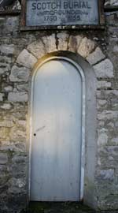 |
Prince Charlies HouseBuilt as a house in 1690, this building on Stricklandgate, Kendal, was an overnight stop for Bonnie Prince Charlie during his army's advance south at the time of the 1745 Jacobite Rebellion when he hoped to restore a Catholic monarch to the English throne. He stayed overnight again on his retreat shortly afterwards and it is reported that his pursuer, the Duke of Cumberland, also slept there a couple of nights later. |
Kendal GreenIn 1331, John Kemp of Flanders arrived in Kendal where he remained and taught weaving methods to the locals. As a result, the hard wearing Kendal Green cloth was developed. Much of the product was shipped abroad to America and is said to have been worn by Kendal archers at the Battle of Agincourt against the French. Even as late as 1597 there is a mention of Kendal Green in William Shakespeares Henry IV. |
Elba MonumentThe obelisk stands on private land in a field a little way outside Kendal on the right hand side of the A591 on the way to Windermere. It was designed in celebration of the imprisonment of Napoleon Bonaparte. Unfortunately, before the commemorative plaque was fully inscribed, Napoleon escaped and another 100 years passed before the inscription was eventually put in place. |
Blind BeckBlind Beck is the narrow stream which flows under the road in Kirkland. It was the original boundary between Kendal Borough and Kirkland. |
Kendal Mint CakeKendal Mint cake has gained a reputation as a source of energy especially for those taking part in physically demanding events such as mountain climbing. It has been included in the provisions of several notable expeditions including Edmund Hillary's ascent of Mount Everest; Shackleton's Transarctic Expedition of 1914 – 1917 and more recently, a round the world motorcycle trip by Ewan McGregor and Charley Boorman in 2004. Mint Cake, which incidentally is not a cake, is still manufactured in Kendal and readily available in shops and stores. |
Kendal MuseumFounded in 1796, Kendal Museum is one of the oldest museums in the country. The museum houses a collection of now extinct and endangered animals; a display area of rare and beautiful Lake District minerals and rocks; a family fun area of displays and "hands on" activities; a Wainwright feature displaying personal items and objects related to the late Alfred Wainwright, the Lake District & Cumbria's renowned fell walker. Special events, exhibitions,, walks and talks take place all the year round. Gift shop and pay and display parking. Partial access to galleries for wheel chair users. Toilets with baby changing facilities.www.kendalmuseum.org.uk |
Recreation and Relaxation in Kendal |
|
Brewery Arts CentreThe Brewery Arts Centre on Highgate, Kendal, is regarded as one of the leading Centres in the country. It provides all year round programmes for cinema, music, events, exhibitions and festivals including the highly acclaimed annual Mountain Festival. A distinctively styled bar offers a range of cask ales, locally brewed ales, wines, spirits, non alcoholic drinks plus a full restaurant menu, pizzas, take-away food and drink. Pay and display parking and free Wi-Fi with every purchase made.www.breweryarts.co.uk |
Kendal Leisure CentreHere you can try 15 of 26 Olympic sports. Facilities include a 25 metre swimming pool, a learner pool; spacious gymnasium for squash, badminton, basket ball, hockey, table tennis and much more. A 900 seat theatre presents well known comedy acts, theatre shows and children's shows.www.northcountryleisure.org.uk/south-lakeland/kendal-leisure-centre |
Kendal Ski ClubSkiing and boarding on an 80 metre Snowflex matting System. Comprehensive range of top quality equipment is available for hire. Floodlights, disabled facilities. The Club is operated by volunteers so please call the answer phone 08456 345 173 for details of opening times and leave your request and contact details.www.kendalski.co.uk |
Lakeland Climbing CentreThe "Kendal Wall" has more than 30 roped climbing lines of 7 to 24 metres suitable for all levels plus a room dedicated to low level wall ascents for absolute beginners. Outdoor climbing experiences are included on a list of courses supervised by nationally qualified and experienced instructors. Equipment, gear shop and Creamery Café.www.kendalwall.co.uk Phone: 01539 721766. |
Nobles RestNobles Rest at the end Maude Street is a public park hardly visible from the busy main street and has been described as Kendal's best kept secret. It's a pleasant grassed area with trees and floral beds donated to the town by Mary Ellen Noble in 1929 as a "place of rest for the aged and young to enjoy" and is a favourite for lunchtime breaks, picnics and quiet strolls. |
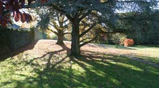 |
Kendal LibraryThe Carnegie Library stands opposite the Westmorland Shopping Centre in Stricklandgate. It holds one of the best mountaineering collections in the country. Internet access, DVD and CD rentals.Opening times; Monday 9.30am – 7pm. Tuesday 9.30am – 5pm. Wednesday 9.30am – 7pm. Thursday 9.30am – noon. Friday 9.30am – 5pm. Saturday 9.30am – 3.30pm. Sunday Noon – 4pm. |
Kendal Town Walks and TrailsThe Kendal Civic Society organises a number of guided walks around Kendal. For details telephone the Society secretary, Patricia Hovey (preferably in the evenings) on 01539 720388 or Trevor Hughes on 01539 724302. |
Kendal Tourist Information CentreThe information centre is housed in the Made in Cumbria Store on Stramongate, Kendal.Telephone 01539 735891. |
|
Walks and Viewing Points around Kendal |
|
| Serpentine Woods This is an enjoyable family walk to the wooded area standing above the town. Before setting off, visit the Tourist Information Centre on Stramongate for a leaflet describing the Serpentine Woods Alphabet Trail. The walk begins from the Town Hall, crosses the road to Allhallows Lane directly opposite, continues up Beast Banks to Queens Road and the entrance to the woods. Now, with the aid of the leaflet follow the clues described. Great fun for the kids. |
The Helm |
| Longsleddale Valley The single track road to the Longsleddale Valley starts its journey bordered by hedgerows and agricultural land before giving way 4 miles later to drystone walls and steep sided fells where the road finishes and the hiking, walking and mountain biking begins. Longsleddale Valley is a totally unspoilt Lake District and Cumbria sculpture which has been shaped and formed over many centuries and left to develop untouched except for a few scattered farms. This is home to masses of seasonal wild flowers, to roe and red deer, red squirrels, the badger and diverse bird life. Longsleddale stands off the A6 only 4 miles to the north of Kendal. The single track road with passing places is not a through route nor is it suitable for coaches or caravans. Midway along the valley road is the 1863 Church of St Mary's where there are a few parking spaces, (donations to the church welcome) toilets, and a card only telephone box. Please note that there is no mobile reception in the valley. More about Longsleddale at www.longsleddale.co.uk |
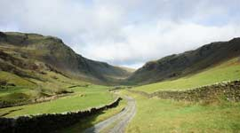 |
| Lyth Valley and Scout Scar (Underbarrow Scar) The Lyth Valley is only a mile or so to the west of Kendal and reached along narrow winding country roads which rise and dip to connect the small village communities of Brigsteer, Underbarrow, Bowland Bridge, Winster, Witherslack and Crook. It's an area of some of the most pleasing scenery in the Southern Lake District and is famous for the Springtime displays of white blossom in the valley's damson orchards. During April, an annual event is held in celebration of the orchards with a day of music, walks in the blossom, a children's fair and a selection of great Cumbrian food and the opportunity to sample the locally produced Damson Gin. Lyth Valley is much loved for it's peace and room to move by walkers. Many make the not difficult ascent to the escarpment of Scout Scar, known also as Underbarrow Scar, for the wonderful views across the valley to the Coniston Fells, the Langdale Pikes and Kentmere Fells. On a clear day, there can be few views more satisfying which is a sentiment so clearly expressed in lines by Isabella Lickbarrow |
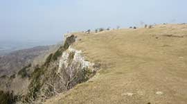 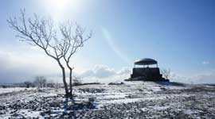 |
Stately Homes |
| Levens Hall and Gardens Levens Hall with its historic Topiary Garden is one of the finest stately homes in South Cumbria. It contains many items of fine furniture, paintings, Spanish leather wall coverings, clocks and miniatures. The Topiary Gardens, dating back to 1694, includes a small apple orchard, a nuttery, herb garden, fountain garden, rose garden and bowling green. Home cooked food and produce from the estate, venison and pheasant when available is served in the stone flagged Servants Hall or outside on the terrace overlooking the formal garden. Try the celebrated Morocco Ale brewed from the original 18th C recipe. Open Sunday to Thursday from the end of March to early October. www.levenshall.co.uk |
| Sizergh Castle and Gardens This ancient fortified mansion in a beautiful setting 4 miles from Kendal is surrounded by landscaped gardens which include the National Trusts largest limestone garden and water gardens. It has been occupied for the last 750 years by the Strickland family and contains fine Elizabethan carved over mantels and a fine collection of elegant English and French furniture. Special events are held here throughout the year with guided walks around the estate and tours of the building. Café, picnic areas, free car parking and toilet amenities. www.nationaltrust.org.uk/sizergh |
Kendal Area Festivals and Events |
|
| Westmorland County Show This is one of the largest one day shows in the country attracting around 30,000 visitors. It is held on the second Thursday of September annually. Sections include cattle, sheep goats, pigs, heavy horses, alpacas, dogs and poultry. Lots of entertainment for all. Food hall with local produce. Cumberland & Westmorland Wrestling. Lane Farm, Crooklands, near Kendal. www.westmorlandshow.co.uk |
Country Fest Another very popular early summer event held at Lane Farm, Crooklands, near Kendal. There's a wealth of entertainment and activities for everyone including music and dance, agricultural displays, sheepdog trials, falconry displays, dog and terrier shows, sheep shearing, local food stands, real ale and much more in this traditional Lake District and Cumbria event. |
| Kendal Mint Fest Held in September, the Kendal Mintfest is one of the major street art festivals in the country. This is a very happy colourful weekend of displays by performers from across the world in venues throughout the town. www.lakesalive.org |
Kendal Torchlight Procession Evening street procession of themed floats and musical entertainment in September. www.kendaltorchlightcarnival.co.uk |
| Westmorland Beer & Cider Festival An event held in the Town Hall during October to showcase real ales, ciders, perries and continental beers. www.camrawestmorland.org |
Kendal Festival of Food A week of celebrating the food of Kendal and the Southern Lake District. Many attractions with cookery demonstrations, wine tasting, restaurant offers and children's activities. Held in October. www.kendalfestivaloffood.co.uk/ |
Kendal Mountain Festival |
|
Eating out in Kendal |
|
| Waterside Wholefood Vegetarian Café & Restaurant A riverside setting a few minutes from the town centre. www.watersidewholefood.co.uk |
Eastern Balti Kendal's first Balti House, exquisite Indian cuisine, elegant surroundings, vegetarian menu, fully licensed, take away service. Phone: 01539 724074 |
| Infusion Italia Restaurant Authentic Italian gourmet cuisine, pizza, pasta, fresh fish, locally sourced meats and a takeaway service situated in the traffic free pedestrian zone on Finkle st. Some outdoor seating. Open from midday to 10pm Monday to Saturday. Telephone 01539 720547. |
Finkles Restaurant and Coffee House Breakfasts, lunches, evening meals and children's meals. Outdoor seating available. Telephone 01539 727325. |
| Indian Restaurant & Takeaway Licensed. 8, Stramongate. Phone: 01539 723787 |
Brewery Arts Centre During the day, the Warehouse café serves a range of drinks, locally made cakes, homemade scones and soups. In the evening the Vats Bar & Grainstore offers a range of pizzas and a Tapas menu together with a choice of wines, spirits and soft drinks. Open every day of the week. Telephone 01539 725133. |
British Raj Tandoori Indian Takeaway |
Union Jack Café Full English breakfasts, selection of cakes, homemade scones with butter and jam. Good value appetising fare served in a welcoming friendly atmosphere in the heart of Kirkland. Close to Peppercorn Lane car park and the Abbot Hall Museum. |
| Station Inn The inn is a couple of miles outside Kendal close to Oxenholme Railway Station. All food prepared to order from an extensive home cooked menu. Daily specials, kids meals, half portions and dietry requirements. Very large outside play area, outside seating on grassed area and plenty of parking. Food served Monday to Friday from midday till 2pm and 5.30pm to 9pm and from midday till 9pm on Saturday and Sundays. Telephone 01539 724094. |
Duke of Cumberland Pub One of Kendals oldest pubs on the junction of Shap Road and Appleby Road at the north side of Kendal. Serving bar meals from midday till 3pm on Tuesday to Saturday; 6pm to 9pm on Thursday, Friday, Saturday; 6pm till 8pm on Tuesday and Wednesday and midday to 6pm on Sundays. Children welcome till 9pm, beer garden, large car park. Telephone 01539 738534. |
| Riverside Hotel Restaurant A wide choice of local freshly prepared products including special menus for vegetarians and children. A building dating back to the early 1600's on the banks of the River Kent next to Stramongate Bridge. |
Castle Dairy Fine dining in a true medieval building which is possibly Kendal's oldest inhabited building.It opens from 10am till 4pm on Tuesday – Saturday and from 6pm till 10pm on Thursday to Saturday. Telephone 01539 733946. |
| Golden Boat Chinese Takeaway Delivery service within a range of 2 miles. 140, Highgate. Telephone 01539 733663. |
Fryer Tux A traditional English “Chippy” whose battered fish and chips are the speciality. Open each day except Sunday from 11.45am – 1.45pm and 4.30pm – 9.30pm. 169 Highgate. |
| The Gate A comfortable daytime cafe providing high quality food and drink with all profits going to the local housing and homeless charity. Soups, panini's, sandwiches, soup combos, crepes, cakes and snacks, crisps, hot and cold drinks, phone orders for takeaways. As well as food, it's a place to share art, poetry, music, an experience or a story. Opposite Evans Cycles at 128 Stricklandgate. Telephone 01539 722332. |
Romneys Pub and Restaurant Romneys is on the south side of Kendal at 72 Milnthorpe Road. It serves a 4 meat carvery each day of the week and a selection of real ales, wines and spirits. There's a childrens outside safe play area and plenty of parking. Telephone 01539 720956. |
| Silver Mountain Chinese Takeaway Phone 01539 729911 for delivery within 3 miles. 133 – 135 Highgate. |
The Globe Inn Open Monday to Sunday from midday till 4pm with a wide choice of main meals, kids meals, hot and cold sandwiches, chargrill, daily specials, tea, coffee, real ales, wines and spirits. |
| Jintana Thai Restaurant Authentic Thai cuisine in a relaxed friendly environment. Noon to 2.30pm and 5pm to 10pm on Sunday to Thursday. Noon to 2.30pm and 5pm to 10.30pm on Saturdays. Set in the centre of Highgate at number 101 and close to shops and stores. Telephone 01539 723123. |
Deja vu Bistro and Restaurant A cosy restaurant with French Mediterranean cuisine open daily from 5.30pm and from midday until 2pm on Wednesday to Saturday. A la carte menu available all evening. Ideal for romantic candle lit dinners and can also accommodate larger groups. Telephone 01539 724843. |
| Paulo Giannis Italian Ristaurante Extensive restaurant menu and adjoining wine bar. Children's meals and baby changing facilities. Open 7 days from midday till 2.30pm and 5.30pm to 10.30pm. Telephone 01539 725858. |
Pizza Express Restaurant A wide choice of pizza, desserts, wines, spirits and liqueurs with outside terrace in a popular Kendal shopping yard off Highgate. Click and collect online takeaway ordering and a piccolo menu for the kids. Open daily from 11.30am till 11.00 pm. Telephone 01539 728598. |
| Charlies Cafe Bar Occupying the lower floor of one of Kendal's historic buildings, Charlie's offers all day breakfast, sandwiches, soups, hot and cold drinks. It's family friendly, highchairs provided, baby changing facilities, children's toys and books, disabled access and a pleasant garden seating area. Close to the shopping centres, post office and library. Telephone 01539 740898. |
Truly Scrumptious Cafe and Restaurant A popular cafe/tearoom providing breakfasts, sandwiches, speciality coffees, teas, salads and cakes. Open Monday to Saturday from 8.30am till 4pm. Situated at the lower end of Stramongate. Telephone 01539 733021. |
| Joshua Tree Licensed Cafe and Bistro Breakfasts, lunches, afternoon teas and evening meals all home cooked and locally sourced in a real olde worlde setting in a building dating back to the 1620's. Outdoor courtyard seating available. Open Monday to Saturday from 9am till 5pm and evening bistro on Friday and Saturdays from 6.30pm. Telephone 01539 737223. |
The Famous 1657 Chocolate House Speciality hot chocolate drinks, sandwiches, wraps, panini's, ice cream and light lunches served by ladies wearing 17th C costume in a truly old fashioned tearoom. On the corner of Branthwaite Brow and Finkle Street. Telephone 01539 740702. |
Masters Tea Room |
Farrers Tea and Coffee House Olde worlde and full of character on Kendals Highgate pedestrian shopping zone. Some outdoor seating on a pavement area. Close to the market place and taxi rank. |
| New Moon Restaurant Lunches from 11.30am – 2.15pm Tuesday to Friday. Evening meals from 5.30pm – 9.15pm Tuesday to Friday. Saturday opening times from 11.30am – 2.15pm and 6pm – 9.30pm. Warm comfortable setting with an extensive a la carte and set menus. Food always fresh and local. Opposite the entrance to the Brewery Arts Centre at 129 Highgate. Telephone 01539 729254. |
Istanbul Pizza, Kebabs and Burgers An extensive range of of pizza and kebabs. Delivery service provided at £1 for orders over £7. but not available for orders under £7. Open Monday, Tuesday, Wednesday and Thursday from 4.15pm till 11.30pm. Friday and Saturday from 4.15pm till 00.30am. Sunday 4.15pm till11.30pm. Telephone 01539 727744. 11, Allhallows Lane off Highgate. |
| New Inn Full main lunch menu from midday to 3pm Tuesday, Wednesday and Thursday. Evening meals from 6pm to 8.30pm Tuesday, Wednesday and Thursday. Meals served from 12.30pm to 7pm Saturday. Sunday Dinner 12.30pm to 3.30pm. Curry and a Pint evening on Mondays and Chilli and a Pint on Fridays. Outside seating available. |
Blue Tiffin |
| Rainbow Tavern Homemade food from midday to 7pm on Monday to Saturday. Choose from an extensive main menu plus a children's menu, a selection of sandwiches, hot sandwiches, jacket potatoes, tea, coffee and hot chocolate. Situated close to the Town Hall and in the pedestrian only shopping zone. Live entertainment on Friday nights. |
The Cottage Kitchen A family run business specializing in local produce, gluten free food, homemade soups, cakes, scones, and jams. Some outdoor seating in the traffic free pedestrian zone. Open 8.30am till 4.30pm from Monday to Saturday and from 10am till 4pm on Sundays. Telephone 01539 722468. |
Ye Olde Fleece Inn |
|
| Castle Inn, Castle Street Tasty bar meals served daily between noon and 2pm in a truly traditional friendly pub. This is a well placed venue for a drink and meal either before or after a walk up to Kendal Castle. Telephone Geoff or Chris on 01539 729983. |
Bridge Hotel, Stramongate Nige welcomes you to The Bridge where fine ales are served all day. Large beer garden overlooking the River Kent and views to Kendal Castle. Telephone 01539 724170. |
Pizzeria Italia Takeaway |
Pumpkins Bistro A licensed restaurant at 7 Allhallows Lane just off Highgate and opposite the Town Hall. Varied menus of locally sourced food and a comfortable place for a morning coffee or tea. It also provides breakfasts and lunches every day except Sunday and evening meals on Thursday, Friday and Saturday. Free wi-fi. Telephone 01539 728722. |
Geno's Pizza and Kebabs Takeaway |
|
Tt's Diner & Takeaway |
The 2Sisters Cafe |
| Kentucky Fried Chicken Open 7 days a week from 11am till 10pm. |
Macdonalds Open 6am till 10pm Monday to Thursday and 6am till 11pm Friday, Saturday and Sunday. |
Kendal Mountain RescueThis voluntary Mountain Search & Rescue Service to the South Lakes, Kentmere and the Howgills relies almost entirely on donations from the public. All team members give their time and skills free of charge. The base is not permanently manned but a message can be left on 01539 727134. In an emergency please ring 999 and ask for Mountain Rescue. For ways to make a contribution to this very worthwhile service contact the team secretary on 01539 727134 or visit www.kendalmrt.org.uk |
Transport |
|
| Cycle Hire Cycle and Mountain Bike Hire from Askew Cycles, The Old Brewery, Wildman Street, Kendal. Cycle hire from £15 per day. Full suspension mountain bike hire from £35 per day. Telephone 01539 728057. |
Heron Travel Air conditioned 16, 24 and 30 seat coaches for sight seeing, wedding hire, club outings, football trips, coastal trips, race meetings and more. www.herontravel.co.uk |
| KT's Coaches of Kendal Modern luxury air conditioned coaches of 24 – 70 seats available for hire on a daily or weekly basis. www.ktscoaches.co.uk |
Kendal Car Centre MOT. Servicing and repairs on all vehicles. Vauxhall and MG Rover specialists. Used Car Sales. Unit 2a, Morland Court, Westmorland Business Park, Kendal, LA9 6NS. Tel: 01539 724455 Fax: 01539 736655 |
Enterprise Car & Van Hire |
|
Taxis in KendalTaxi ranks are on Highgate, market place, the bus station, the railway station, Oxenholme railway station. |
|
| Taxis Kendal - Probably the most musical taxi service in Kendal. Phone: 07570 844952 |
Castle Taxis - Long established Company offering 24 hour service. Distance no object. Phone: 01539 726233 |
Airport Services -
Twenty four hour service to and from airports and ferry terminals. |
Blue Star Taxis -
Airport transfer, ferry teminals. Oxenholme train station links to your holiday accommodation. Luggage transfer for walking holidays. The office is manned 24 hours from Thursday to Sunday and for 20 hours from Monday to Wednesday. Telephone 01539 723670. |
Parking in Kendal |
|
| K. Village, Lound Road. Kendal parish Church. Pay & Display. Peppercorn lane, Kirkland. Pay & Display. Maximum 4 hours. Brewery Arts Centre. Highgate. Pay & Display. South Lakeland House. Pay & Display. |
Library Road, Stricklandgate. Pay & Display. Blackhall Road. Pay & Display. Westmorland Shopping Centre. Pay on exit. Oxenholme railway station. (24 hours) Pay & Display. |
Toilet facilities in KendalKendal operates a Community Toilet Scheme. Participating businesses during normal business opening hours and without the need to make a purchase are as follows: |
|
| K. Village, Lound Road. Abbot Hall Gallery Coffee Shop, Kirkland. Brewery Arts Centre, Highgate. Kendal Town Hall, Highgate. Quaker Tapestry, Stramongate. |
Beales Department Store, Finkle Street. Charlies Café Bar, Stricklandgate. Westmorland Arms, Maude Street. J.D. Wetherspoons, Allhallows Lane. Westmorland Shopping Centre (payable). |
Kendal AccommodationKendal is an ideal base as a location for your Lake District break. With it's abundance of restaurants, shops and nightlife, Kendal offers numerous hotels, B&B's, self catering cottages and nearby camping and caravan facilities. |